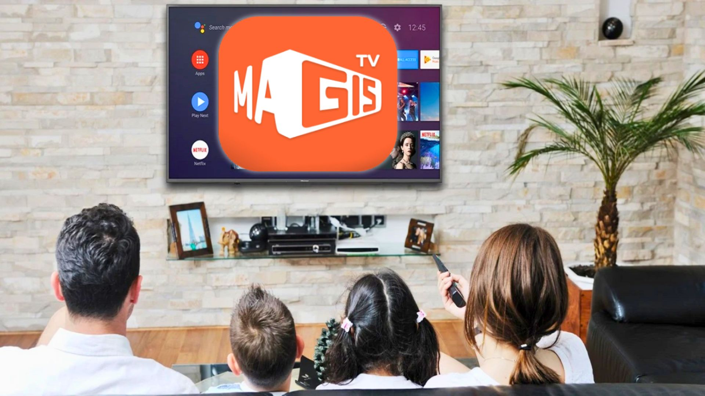

Español
Español
 English
English
Magis TV APK
Download MagisTV APK 2026 and enjoy 1300+ live HD channels, 50,000+ movies and series, and 250+ sports channels from all major leagues. Stable signal, smooth streaming, and free entertainment on every screen.
 5934684
5934684

Core Features
Unlimited, uninterrupted entertainment on all your devices.
Thousands of Live Channels
MagisTV offers thousands of live television channels globally. Sports, entertainment, breaking news, and lifestyle content instantly.
HD Streaming Engine
Channels and streams load natively in HD quality. Experience crystal clear sports moments and seamless buffering.
Movies On Demand (VOD)
The application harbors a massive library of on-demand movies. Never wait for a channel guide again, watch instantly on your own schedule.
Cross Platform Compatibility
MagisTV APK performs smoothly across hardware platforms allowing unhindered multiscreen viewing experiences.
- Android Televisions: Flawless playback on native Android TV ecosystems.
- Smart TVs: Supports LG, Samsung, Sony interfaces natively.
- Android TV Boxes: Turn any screen into a smart theater.
- Firestick: Streams flawlessly using internal Amazon chips.
- Smartphones: Pocket friendly compatibility for mobile.
- PC & Laptops: Easy installation using Android desktop emulators.

What precisely is Magis TV Streaming TV?
You can enjoy robust live tv sports, blockbuster movies, and TV broadcasts providing all streaming solutions at any moment. High speed networks reduce buffering delays keeping your streaming tv entertainment highly fluid.
Live Sports Networking (250 to 550 channels)
Sports enthusiasts can actively manage real-time game monitoring. Magis TV grants premium admission to high tier football matches, national basketball events, and massive cricket tournaments. Hardcore sports fans stay in touch utilizing match recaps, internal sports interviews, and deep dive statistical analysis streams.
- ESPN / ESPN 2 World
- Movistar Premium Sports
- UFC Channels / Live Wrestling Rings
- Live Formula 1 Circuit Coverage
- Gol TV Worldwide
- Premier League, LaLiga, & Serie A
- Bundesliga & Ligue 1 Network Coverage
- Champions League & Europa League Live
- World Cup 2026 Broadcasters
Advanced Streaming Features
Electronic Program Guide (EPG): Learn precisely when an upcoming pilot episode airs. Advanced EPG arrays track live TV lovers' ultimate preferences helping coordinate schedules alongside local live streams.
Universal Cloud DVR: Record live broadcasts effortlessly directly into a massive digital vault to preserve content viewing later. Take absolute strategic control over complex TV scheduling limitations safely via Cloud DVR arrays.
Adult Parental Controls: Confine specific violent categories shielding young children safely beneath highly restricted PIN code authorizations protecting youth demographics effectively.
The Global Impact of Magis TV Streaming
Argentina (AR) & Chile (CL)
Deep localized networks utilize Magis TV arrays delivering widespread access targeting live South American football sequences, modern blockbusters, and binge-able series devoid of heavy subscription tolling. Chile originally represented an aggressive expansion staging zone pushing deep reliable broadcasts rapidly up through the continent.
Mexico (MX) & Colombia (CO)
Extensive Mexican regions host their unique localized hubs connecting thousands of dedicated Liga MX passionate fans. Operating smoothly across Colombia, massive Copa Libertadores network feeds stream constantly into households daily ensuring global soccer action rarely stops.
Spain (ES) & The United States (EE. UU.)
Spain bridges the massive gap into vast European streaming adoption frameworks representing a heavyweight continental presence. Stateside, immense Spanish-speaking populations densely heavily rely upon Magis TV structures broadcasting seamlessly directly into deep Latino communities daily.
Frequently Asked Questions
Is the App completely free?
Absolutely. The base framework hosts a free application suite carrying massive arrays containing live television strings, HD sports streams, and VOD cinematic experiences devoid of hidden financial obligations.
Are Sports networks reliably included?
Yes, this premier entertainment APK deeply embeds global sports streams highlighting worldwide match streams, tournament highlights, and rolling sports news arrays drawn rapidly across large Latin/European sectors.
Can this execute onto standard PCs/Laptops?
Yes. Installing an industry proven Android environment suite like BlueStacks physically allows executing raw high quality APK code directly inside an emulated Mac or Windows framework.
Is the system safe and frequently patched?
The operational application ecosystem systematically applies critical architectural updates optimizing underlying network pathways, debugging local interface stutters, and actively expanding live database channel volumes safely.